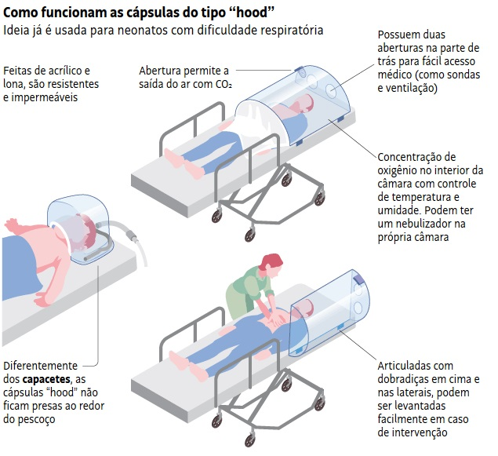

INFO COVID-19
Início
Sobre
Contato
Saiba Mais
Mandetta é demitido em meio à crise da Covid-19 e Bolsonaro escolhe o médico oncologista Nelson Teich para o Ministério da Saúde.
O médico da família, Antonio Sproesser, explica quais os cuidados necessários de quem convive com alguém contaminado pelo coronavírus.
A Psicóloga Cristiane Holanda apresenta 3 dicas de como superar a ansiedade em tempos de quarentena.
A Sony aderiu a iniciativa do 'Fique em casa' e disponibilizou dois jogos clássicos de graça por tempo limitado no Playstation 4. Confira como adicioná-los à sua conta!

Amazonense cria cápsula de proteção para frear contágio do coronavírus em hospitais
O Convidado deste podcast é o infectologista Celso Granato, do Fleury Medicina e Saúde e da Universidade Federal de São Paulo. Diante de tantas incertezas, o que o mundo e o Brasil têm feito para frear a transmissão da Covid-19, doença causada pelo agente infeccioso? O que ajuda e o que só atrapalha a sociedade nesses tempos difíceis? E qual o tamanho da ameaça?